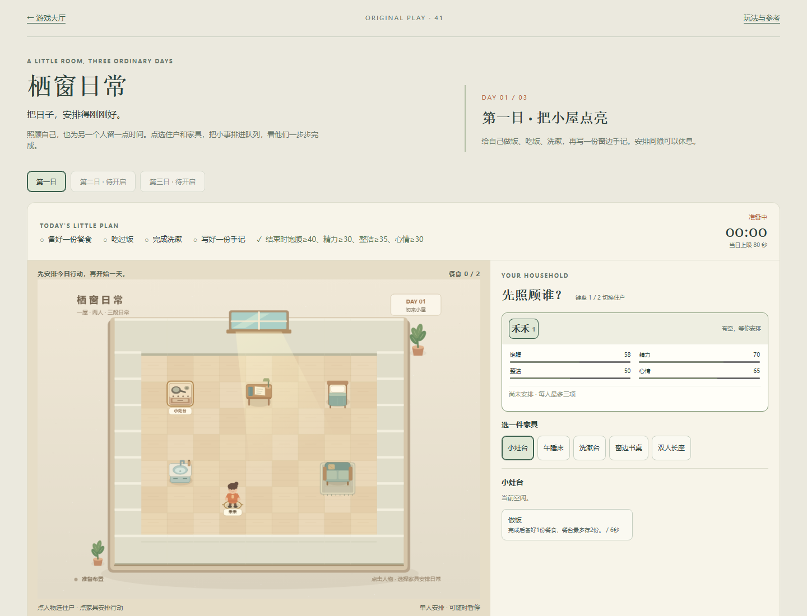
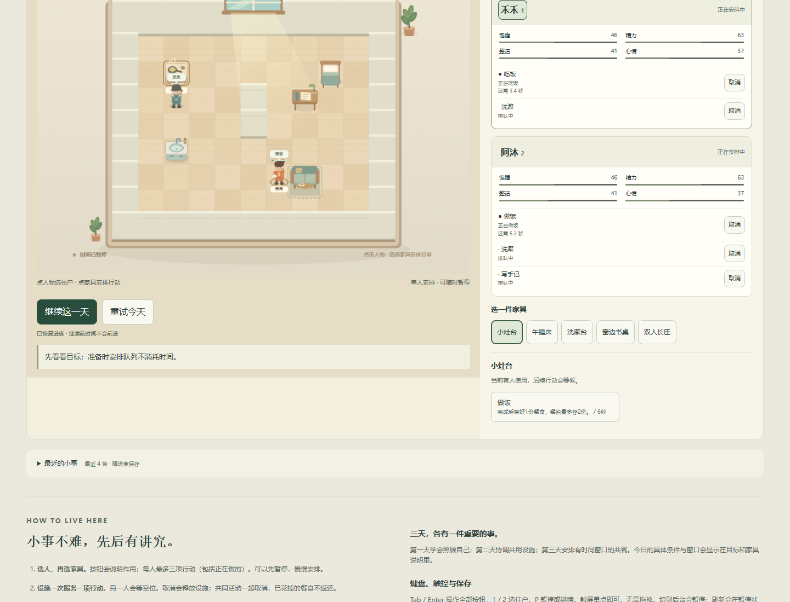
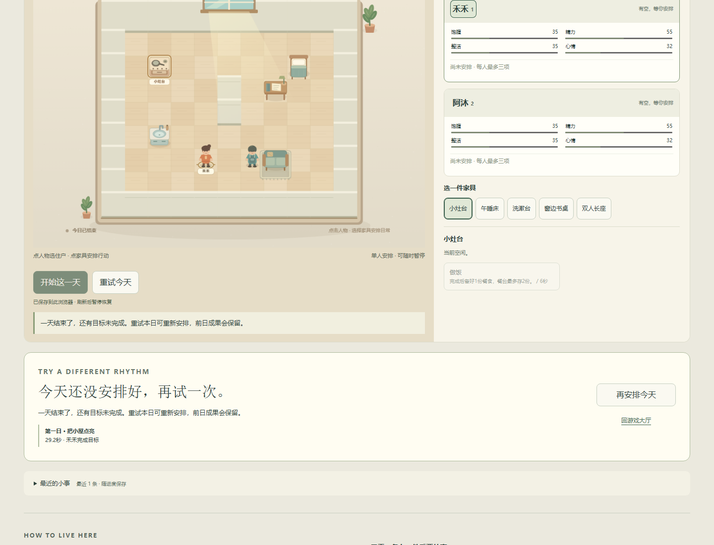
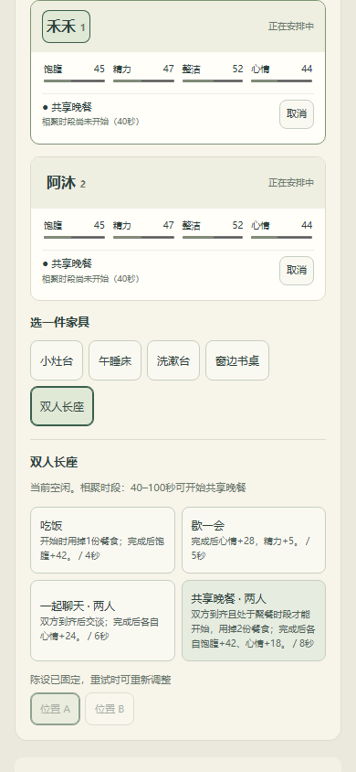
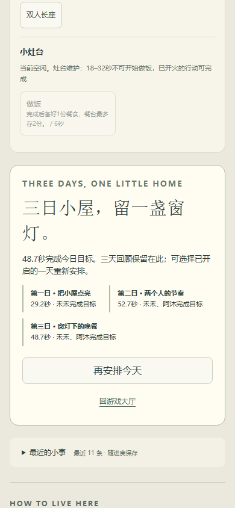

新增第41项原创生活小品。参考《模拟人生》系列的需求照料与行动安排方向，人物、房间、目标与美术原创；不是官方复刻，也没有开放沙盒或完整建造系统。旧40项与所有版本保持。
Chromium桌面1440×1100、390×844 CSS模拟视口。脚本通过普通人物、家具、行动、开始/暂停等页面按钮，依据只读状态按已知合法排程安排；模型时间实际流逝，没有注入时间、胜负或完成存档。第二、三日两位住户由同一脚本安排，不是两位真人协作。
| 一天 | 实际成功 | 观察 |
|---|---|---|
| 搬来小屋 | 29.2秒 | 做饭、用餐、洗漱、手记与需求条件达成 |
| 两个人的节奏 | 52.7秒 | 共享设施轮流、双方各自目标和共同聊天 |
| 窗灯下的晚餐 | 48.7秒 | 维护前备餐、双方手记，等待40秒窗口后共享晚餐 |
这是辅助排程的游戏内活动时间，未计暂停、准备、页面操作等现实时间，不是保证的通关时长或真人难度评估。





0.1秒固定步纯模型：第二日先备餐52.6秒、先手记/换位46.2秒；第三日维护前备餐48.7秒、维护后备餐61.8秒。两种可行安排是模型证据，不冒称另两条普通UI通关。
模型覆盖共享设施等待、联合行动原子排队/双方取消/占用释放、用餐不重复扣除或退款、三项队列上限、准备期换位、维护窗口、暂停、逐秒快照可恢复、终态与坏快照拒绝。整段三日进度逐tick恢复由独立存储单元检查。
独立浏览器故障夹具令当前游戏setItem抛QuotaExceededError：显示风险、保留原有效字节、仍能玩；恢复写入后提示清除。坏JSON在新上下文加载前提供，原字节保全且不覆盖。故障注入与成功游戏会话分离，未模拟真实设备磁盘或浏览器隐私策略。真正切换无头标签未可靠触发失焦，另用明确标注的合成blur事件验证暂停处理；真实OS切后台仍需人工设备验证。
保留的失败尝试：首次本地集成测试在工作者定稿替换模型前已载入旧的备选家具坐标，刷新被严格校验拒绝；未曾发布，也未导入为用户存档。模型定稿后从全新上下文重验三日。后续触控断言误将七次点按计为至少八次，已修测试并单独短验，不重跑三日。集成记录、计数断言记录保留。
源码测试：node scripts/test_windowlife.mjs、node scripts/test_windowlife_storage.mjs；普通UI与故障脚本为scripts/test_windowlife_ui.py、scripts/test_windowlife_faults.py。UI原始结果 / 触控短验 / 模型五排程 / 存储故障。
尚未验收自由安排的趣味、节奏与难度，真实手机触控/性能与OS后台切换、屏幕阅读器完整流程和整体审美。没有音频实现。本轮不继续添加房间、住户、装饰或泛化QA；下一内容方向应在真人试玩反馈后选择。